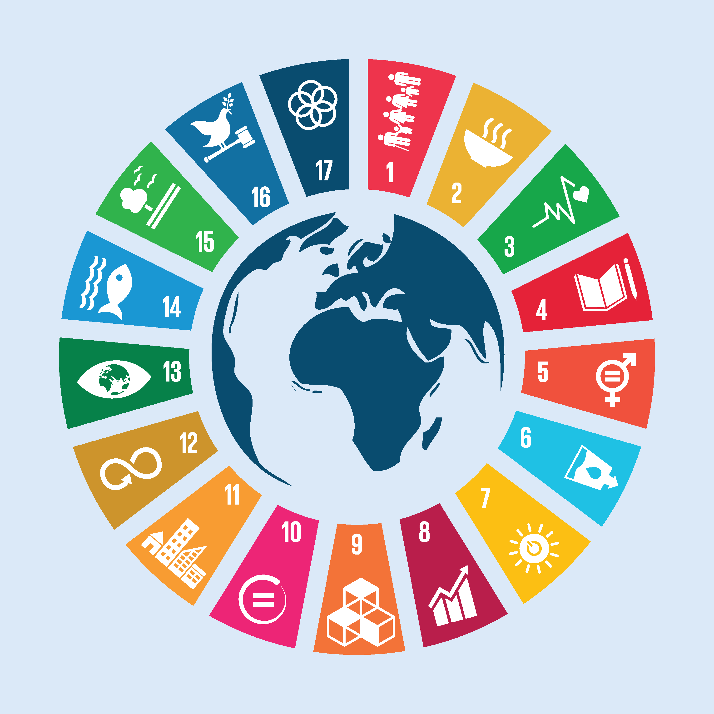

Sustainable Development Goals
This project analyzes the data related to the United Nation's Global Sustainable Development Goal 12: "Ensure sustainable consumption and production patterns," in order to visualize trends and predict if the targets will be met by the goal target's deadlines of 2020 and 2030.

Goals
- End poverty in all its forms everywhere
- End hunger, achieve food security and improved nutrition and promote sustainable agriculture
- Ensure healthy lives and promote well-being for all at all ages
- Ensure inclusive and equitable quality education and promote lifelong learning opportunities for all
- Achieve gender equality and empower all women and girls
- Ensure availability and sustainable management of water and sanitation for all
- Ensure access to affordable, reliable, sustainable and modern energy for all
- Promote sustained, inclusive and sustainable economic growth, full and productive employment and decent work for all
- Build resilient infrastructure, promote inclusive and sustainable industrialization and foster innovation
- Reduce inequality within and among countries
- Make cities and human settlements inclusive, safe, resilient and sustainable
- Ensure sustainable consumption and production patterns
- Take urgent action to combat climate change and its impacts
- Conserve and sustainably use the oceans, seas and marine resources for sustainable development
- Protect, restore and promote sustainable use of terrestrial ecosystems, sustainably manage forests, combat desertification, and halt and reverse land degradation and halt biodiversity loss
- Promote peaceful and inclusive societies for sustainable development, provide access to justice for all and build effective, accountable and inclusive institutions at all levels
- Strengthen the means of implementation and revitalize the Global Partnership for Sustainable Development
Global SDG Indicators Database. (n.d.). Retrieved May 2, 2020, from https://unstats.un.org/sdgs/indicators/database